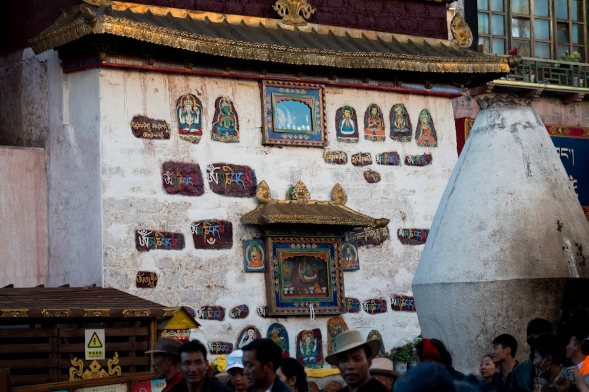

节庆历年规律西南
拉萨雪顿节
Shoton Festival in Lhasa · 西藏 · 拉萨
最佳时间
藏历六月底（2027 年约 8 月中旬）
按藏历推算，公历常落在 8 月中旬，以拉萨官方公告为准。
「吃酸奶的节日」：哲蚌寺晒大佛拉开序幕，罗布林卡藏戏连演数日。
不能错过
- 清晨哲蚌寺展佛(晒大佛)是重头戏，需摸黑早起
- 罗布林卡看藏戏、过林卡融入本地生活
当地美食
酥油茶+糌粑雪顿节早晨标配，能量拉满
牦牛肉汤高原炖汤鲜浓，配藏面吃
酸奶(re』)雪顿节就是「吃酸奶的节日」，白糖拌着喝
藏式甜茶红茶牛奶煮的暖甜，甜茶馆社交
旅人提醒
- 展佛日凌晨 4–5 点出发才能占到近处机位
- 8 月为雨季尾声，带轻雨具
月度热力与气温
7°
1
9°
2
12°
3
16°
4
20°
5
24°
6
24°
7
23°
8
22°
9
17°
10
12°
11
8°
12
适宜度（柱高，5=最佳）依据活动窗口与气候整理；气温为月均高温近似值（°C），仅供规划参考，出行前请查当地预报。
编辑核实笔记 · 整理自拉萨历年雪顿节公告，非亲历；日期以官方为准。
预订 / 官网
官方页面：查看官网 / 官方信息 ↗ · 票价与预约以官网为准
联盟链接含占位 tracking id（Booking/Klook/Trip.com），上线替换为真实 ID 即生效；均带 utm 参数与点击统计。